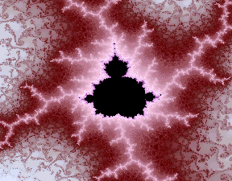
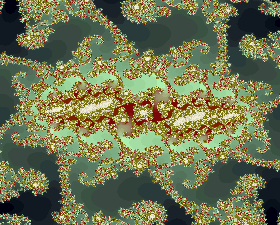

|
|
|  |
 |
| Click to magnify | Click to magnify |
|
| These images come from the Mandelbrot set gallery of Frank Roussel. |
| Some
instances of the Mandelbrot set are just plain entertaining, in one way or
another. |
| Despite its remarkable visual complexity, the Mandelbrot set is defined by
a very simple iteration process. |
| One of the early surprises of the
Mandelbrot set is that its periphery is filled with a halo of tiny copies
of the entire set, each of which is surrounded by its own halo of still tinier copies, and so on, on smaller and
smaller scales, without end. |
| Explore the Mandelbrot set with this software. |
| Here is a gallery of Mandelrot set images. |